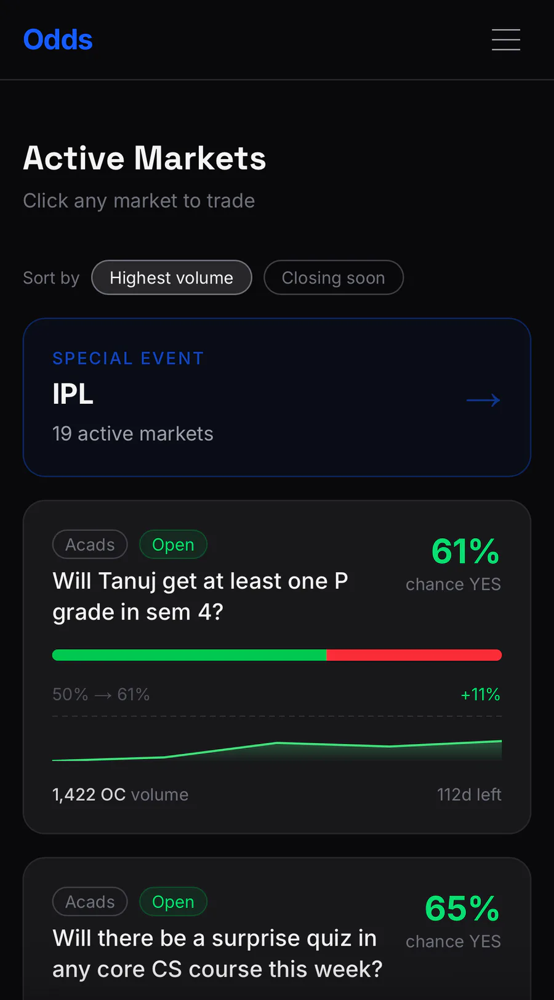
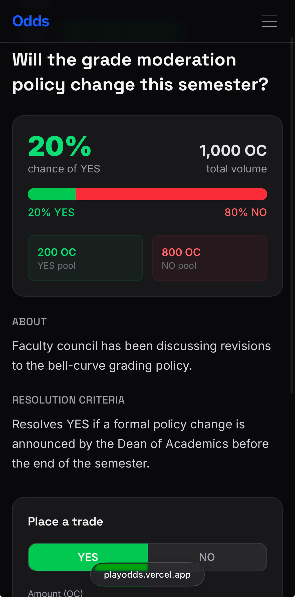

my roommate was obsessed with polymarket for a while and i randomly got an idea - polymarket but for iit madras students.
students can start their own markets. things like whether their hostel will win the inter-hostel tournament, whether their friend will get fail attendance in a course, who the cultural fest guest will be etc etc. literally anything people find interesting.
so i set out to build it. learned about backend (supabase) and authorisation (oAuth) so only student mail can access the site. was very cool to see a an option to sign into my site with google and then on the backend see the details of each user (which were 3 of my friends). though i'm not quite sure of how secure the DB is. i put stuff like RLS and asked both claude and chatgpt whether it's secure and they said yes. works, i guess. at least, for now.
couldnt publicise because prediction markets are a legal grey area in india :/ so, for now it uses a made-up currency (odd-coins) that i invented for this. but people lose the incentive to participate if there's no actual money at stake so, for now the product is just there. thinking how to make something bigger out of it.


| Layer | Technology |
|---|---|
| Framework | Next.js 16.2.1 (App Router, Server Components, Server Actions) |
| Backend / DB | Supabase — Postgres, Auth (Google OAuth), Row Level Security |
| Styling | Tailwind CSS v4 |
| Deployment | Vercel (with Vercel Analytics) |
| Rendering | ISR — Home: revalidate every 60s; Market Detail: every 30s |